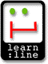

[Schüler-Tandem | Neue Spiegel-Server | Neue Server-Struktur |
 Neuer Leitfaden] Letzte Änderung: 25.6.1997
Neuer Leitfaden] Letzte Änderung: 25.6.1997 [dansk | English | español | français | italiano | Nederlands | português | svenska]
[Schüler-Tandem | Neue Spiegel-Server | Neue Server-Struktur | Neuer Leitfaden] Letzte Änderung: 25.6.1997
| E-Mail-Tandem für Schüler |
 Mit dem neuen Schuljahr - also ab August 1997 - wird E-Mail-Tandem auch für Schüler systematisch angeboten. Ein wichtiger Schritt dazu ist die jetzt beschlossene Einrichtung eines Arbeitsbereichs "Sprachenlernen im Tandem" im neuen Bildungsserver des Landes Nordrhein-Westfalen, learn:line. Dieser Arbeitsbereich, an dem außer dem International Tandem Network und dem Seminar für Sprachlehrforschung der RUB auch das Landesinstitut für Schule und Weiterbildung in Soest mitarbeiten werden, soll Schüler, Eltern und Lehrer informieren und begleitende Maßnahmen wie die Erstellung von besonderen Lernmaterialien, die Einrichtung von neuen Foren usw. vorbereiten oder organisieren. Ähnliche Maßnahmen in anderen europäischen Ländern werden angestrebt.
| Tandem-Server in den Top 5% |
 Der Tandem-Server gehört zu den besten
5% unter den deutschen WWW-Angeboten. Das ist zumindest die
Meinung der Experten des Bewertungsdienstes "webTIP" (PC Magazin DOS). Obwohl sie nur die alten
WWW-Seiten bewertet haben (noch keine Frames), rechnen sie
unseren Server zu den besten des Jahres 1997. (Bewertung von
März/Juni 1997; die von 1996 war ähnlich.)
Der Tandem-Server gehört zu den besten
5% unter den deutschen WWW-Angeboten. Das ist zumindest die
Meinung der Experten des Bewertungsdienstes "webTIP" (PC Magazin DOS). Obwohl sie nur die alten
WWW-Seiten bewertet haben (noch keine Frames), rechnen sie
unseren Server zu den besten des Jahres 1997. (Bewertung von
März/Juni 1997; die von 1996 war ähnlich.)
| Neue Spiegel-Server |
Um den Zugang zum Tandem-Server für Lerner in Europa und anderen Teilen der Welt zu erleichtern, haben die Partner des EU-ODL-Projekts "Telematics for Autonomous and Intercultural Learning in Tandem" damit begonnen, neben Bochum und Trier neue Server einzurichten, die den Tandem-Server spiegeln (kopieren): an der Ecole Nationale Supérieure des Télécommunications (ENST) Paris (seit dem 27. Januar), an der Università di Torino (seit dem 19. Februar), am Trinity College, University of Dublin (seit dem 22. Februar).
| Leitfaden für das Sprachenlernen im Tandem über das Internet |
Der "Leitfaden für das Sprachenlernen im Tandem über das Internet" ist jetzt in 8 Sprachen erhältlich (dänisch, deutsch, englisch, französisch, niederländisch, portugiesisch, schwedisch, spanisch); die italiensiche Version wird 1997 folgen. Vgl. die besondere Veröffentlichungsliste.
| Neue Server-Struktur |
Wir sind dabei, die Informationen über das Sprachenlernen im Tandem (Präsenztandem ebenso wie Distanztandem, z.B. E-Mail-Tandem) auf diesem Server neu zu strukturieren und zu modernisieren. Bitte entschuldigen Sie dadurch verursachte zeitweise Probleme. Sie können die neue Struktur schon sehen, wenn Sie Deutsch, Englisch oder Spanisch als Sprache wählen. Für Anregungen sind wir dankbar (brammerh@slf.ruhr-uni-bochum.de).